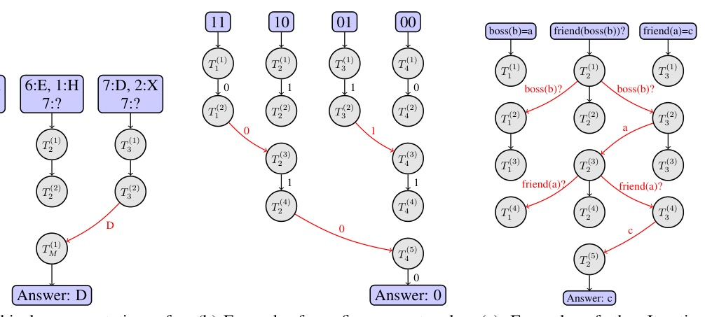
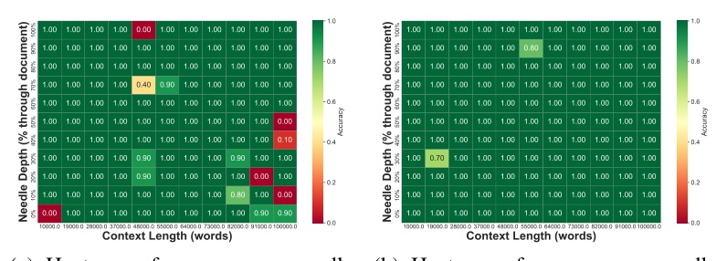
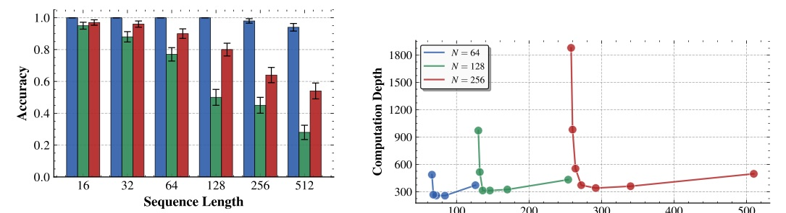
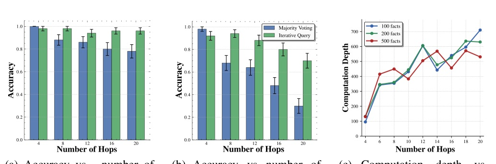

A theory-first map of when extra agents reduce critical-path depth — and when they only add messages.
More agents do not make reasoning cheaper. They help only when a task has parallelizable local work and communication can combine it.
| Task | Depth | Communication | Engineering meaning |
|---|---|---|---|
| Associative recall | O(1) | O(1) | Scale context without added critical path |
| State tracking | O(N/w + log w) | Theta(w) | Spend messages for parallelism |
| k-hop reasoning | O(k) | Theta(k) | Serial dependency survives partitioning |
Constant communication + decreasing depth is not a fourth regime. If messages never grow, parallel agents cannot create an asymptotic speedup.


| Quantity | Achievable bound | Lower-bound reading |
|---|---|---|
| Depth | O(log w + N/w) | Omega(N/w), up to log factor |
| Communication | O(w) | Omega(w) for nontrivial groups |
| Total size | O(N) | Omega(N) for PARITY |

Use a tree or cascade when partial results are associatively composable. The manager should not have to re-absorb every raw worker answer.

| Item | Setting |
|---|---|
| Corpus | Paul Graham essays; 14k words, concatenated for longer contexts |
| Runs | 10; report average accuracy |
| Majority Voting | 8 agents |
| CoA | chunk size 2000 |
| Base model | Meta-Llama-3.1-8B-Instruct-Turbo |
“The size of the protocol cannot be reduced using multiple agents beyond a constant factor.”
多代理不能把協定的總計算量降到常數因子之外；它改的是平行排程，而不是免費少做工作。§4.1 p.5
“Depending on how the facts are distributed among the agents, computation depth and communication budget may be Ω(k) in the worst case.”
若答案鏈跨 worker 分散，k-hop 的序列相依不能靠增加代理人數消失。§4.4 p.7
For agent systems: map the dependency graph first, then allocate workers and messages.